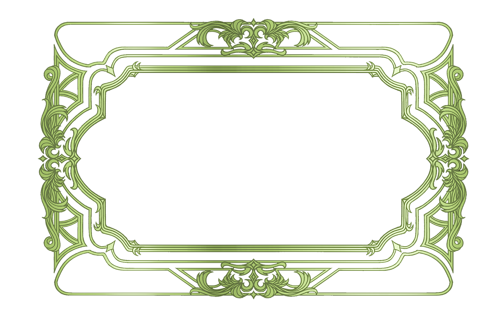

About
Warbler is a typeface designed for extended reading, with a strong focus on how it performs on screen. It takes inspiration from the types cut by William Martin in 1790 for the English printer William Bulmer, used in his editions for the Shakespeare Printing Office.
This interpretation highlights a softer side of the Modern serif. Instead of feeling rigid or overly strong, Warbler has a more gentle and refined tone, creating a contrast with the more authoritative style of the Scotch Romans that came after.
Designed by David Jonathan Ross
Specimen

Sentimental
Regular Bold Italic
The essence of Warbler
Elegant
Soft
Delicate
Sophisticated
Variable Axes
Warbler is a variable typeface with two main axes: weight and optical size. These axes allow the font to adapt across different uses, from delicate display settings to comfortable long-form reading.
The weight axis controls how light or bold the type appears, while the optical size adjusts the details of the letterforms depending on size, improving clarity and readability on screen.
Aa
Type to test the font
For extended reading
A short passage to show how Warbler performs in longer reading.
From an old tale
In old times when wishing still helped one, there lived a king whose daughters were all beautiful, but the youngest was so beautiful that the sun itself, which has seen so much, was astonished whenever it shone in her face. Close by the King’s castle lay a great dark forest, and under an old lime-tree in the forest was a well, and when the day was very warm, the King’s child went out into the forest and sat down by the side of the cool fountain, and when she was dull she took a golden ball, and threw it up on high and caught it, and this ball was her favourite plaything.